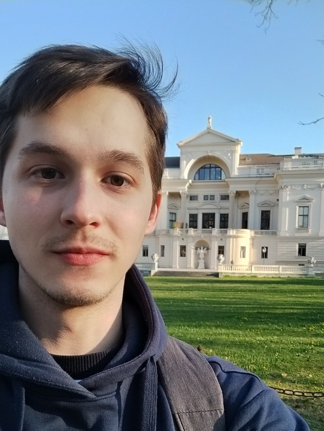

About Me
I am Csaba Daniel Farkaš, a second year BSc Mathematics student at the University of Vienna.My interests in mathematics include algebraic topology and contact geometry. In the field of computer science, I tend to play around with the following: creating software for personal use, intuition behind ML algorithms and solving problems on CodeForces.

My favorite trick in mathematics is the "finite good covering trick on manifolds". (see Bott, Tu - Differential Forms in Algebraic Topology). It frequently uses one of my other favorite tricks, Mayer-Vietoris!
My favorite albums:
- Masayoshi Takanaka - All of me
- Trollfest - Kaptein Kaos
- Masayoshi Takanaka - The Rainbow Goblins
- Ice Cube - Raw Footage
Contact
E-Mail: csabadanielfarkas at gmail dot com
or find me in person